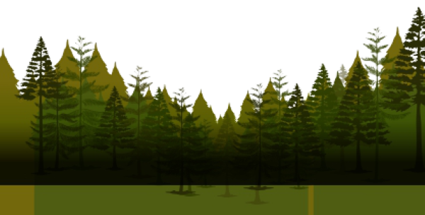
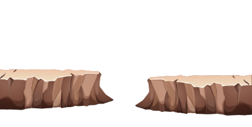
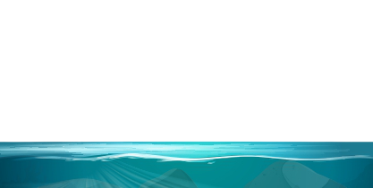

It's time for a newAdventure



海洋是地球上最神秘的地方
抬頭仰望星空那麼充滿著深邃和寧靜那是一切奧秘的所在不過那距離我們太過遙遠即使是在科學誕生300餘年後的今日我們的腳步仍然限制在了地球的周邊我們知道在遙遠的宇宙中充滿了秘密但是我們無力去探究 至少暫時無力低下頭來 回望現實回望我們美麗的地球這裡同樣充滿著秘密特別是那如天空般蔚藍如宇宙般深邃的海洋那是一片神秘的領域那裡有很多我們所不知道的東西每一個人都嚮往大海但大多數只能在岸邊欣賞其美充其量駕船馳騁於海面之上而對於水面之下的世界 則鮮有人知